|
MARIE-ANNA, WIDOW AND
GRANDMOTHER
For Marie-Anna, now a widow, life must go on,
with the support of her children, her family and the good friends she has
had for many years.
|

Lighter, folding
outdoor chairs come on the market.
Marie-Anna likes to have the latest modern products; in that sense she is
a woman "of her time".
|
In 1941 Marie-Anna rents
a second-floor flat at 7965 rue St-Gérard.
She lives there for several years, marries off her
children from there and goes on raising her youngest, Ghislaine. She
sends her as a boarder to the convent of St-Aimé
(today
Massueville)as soon as she reaches school
age. That is the rule for a good education for
girls.
Since few flats were
available at the time, some of her
children would live with her for a while after their
weddings.
|
|
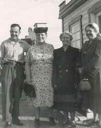
Benoît, Lydia
Bédard and Obéline Létourneau (2 cousins of Marie-Anna's),
Marie-Anna
|
Until his marriage in 1945,
Benoît, her eldest son, acts as Marie-Anna's
support. He stands in as father* for his
brothers and his sister at their weddings.
*at a wedding, the fathers of the groom and of the bride
each walk their child to the altar, thereby agreeing to
give them in marriage. They are the principal witnesses and they
sign the marriage record with the newlyweds. If
the father was absent, a brother or an uncle had to take his place.
|
|
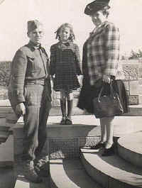
Gérard, Ghislaine, Marie-Anna
|

Marie-Anna's four
sons
Jean-Noël, Rosaire,
Gérard, Benoît
|
| Another
war began in 1939, and two of Marie-Anna's sons serve in it: Gérard in the regular army and Rosaire in the air force.
Jean-Noël also goes through military training, but the
war ends before he sees action. |
THE WEDDINGS OF
MARIE-ANNA'S CHILDREN
From 1941 to 1948 Marie-Anna
marries off all her children except her youngest, Ghislaine, who is a boarder
during the school year and who will choose the religious life in the early
1950s.
|

Wedding of Thérèse, her eldest
daughter, to Gérard Cantin on October 9, 1941.

|

Benoît
marries Cécile Deneault on May 31, 1945. He lives with his
in-laws, first in Verdun. Cécile has a hat shop
on rue Ste-Catherine and Benoît is a mechanic in
a garage. Then they move to Saint-Luc, in Saint-Jean county. There he has
a garage built, with two rental flats above it.
|
|

Rosaire marries
Rachel Philippe on September 15, 1945. Rachel's father
was the accountant at Rosario's garage, and her mother is one
of Marie-Anna's friends. Rosaire works in
printing. They spend most of their lives in
Laval, Sainte-Dorothée.
|

Gérard marries
Jacqueline Consigny on June 29, 1946. He has recently been demobilized and
come back from Europe. The couple
moves in with Jacqueline's mother. Gérard
drives a taxi, then works for the Post Office, then the
City of Montréal, while also doing other odd
jobs.
After 10 years in Saint-Luc, they come back to
Montréal in 1967.
|
|
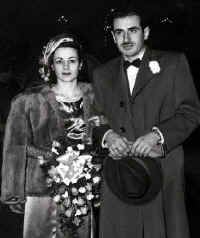
Jean-Noël marries
Florence O'Brien on April 17, 1948. They spend most
of their lives in Pont-Viau, Laval.
Florence's mother lives with them for many, many
years.
|

The head table
at Jean-Noël and Florence's wedding.
From left to right: Ghislaine, Cécile Deneault (Benoît's
wife), Benoît (as the groom's "father"),
Marie-Anna, the newlyweds, Irène Fafard and Thomas
Alfred O'Brien, the bride's parents, and George
O'Brien, her brother.
|
|

Ghislaine enters the
religious community of the Presentation of Mary and
takes her vows on February 2, 1956.
|
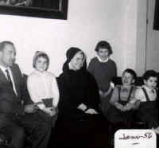
Benoît, Paule his 2nd
daughter, Ghislaine, Diane, Benoît's eldest daughter, Michel
and Linda, Jean-Noël's children
|
|
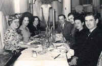
From left to right: Marie-Anna,
Cécile, Jacqueline, Benoît, Jean-Noël, Florence,
Gérard
|
Marie-Anna turns
50
on April 27, 1947.
Her children mark the occasion with a supper at a
cabaret, the "Quartier Latin", at 1177 rue
de la Montagne, where Thérèse works as a barmaid.
|
|
MARIE-ANNA
AND HER BROTHERS
Jean
(official name: Joseph), Marie-Anna's older
brother, marries Hélène Vilemaire, daughter
of Hormisdas and Catherine Sarault, on May 27, 1919, in
St-Zotique parish. They had no children. He
worked in printing and lived in Verdun, in a
handsome, well-to-do house full of souvenirs of a
trip Jean made to Japan and Asia as a young man. He and his
wife take an ocean liner for a trip to
Europe in the late 1950s. Jean dies in 1976, and
his wife the following year.
Antonio
(official
name: Antoine)
a taxi
driver, lived for many years as man and wife with a separated woman
who had a daughter (Ghislaine's
recollection). In those days this choice of life made him an outcast
from society and from his family. He was
allowed to visit his family only alone; there was no
question of his bringing his companion. Divorce
did not exist, children born out of wedlock had no
legal status, and couples living "accotés" (common-law) could not
show themselves in public, since social conventions
forbade it. They were a disgrace to their families.
Antoine dies in December 1992.
Update, April 7,
2007: Searching
BMS2000, we learn that Antoine married Éva Lamontagne
on October 6, 1970, in Sherbrooke. She is surely
the common-law wife he had lived with for so long.
Éva had first married in Sherbrooke in
1921, to George Cross, from England, and had
had a daughter with him, Lilianne, who
married in Montréal in 1946.
So Antoine and Éva did finally marry,
probably once she was widowed;
they were each over seventy. |
|

Marie-Anna and
her brothers Jean and Antonio come together on May 30, 1945,
for Benoît's wedding. Jean stands in as "father"
for his nephew.
|

Diane, Benoît's daughter, Marie-Anna, Jean Caron and
his wife Hélène Villemaire (Aunt Nelly).
|
|
A MODERN
WOMAN
Marie-Anna is a modern
woman who loves the new electric household
appliances that make life easier. Electric irons
and refrigerators are not yet found
in every home in the 1940s.
In the early 1950s Marie-Anna is photographed in her
living room in front of her first television. In the early 1960s
she has the first colour television, when no colour
programmes are yet broadcast in Canada. Most of these items
are bought in the United States by her children when they
go, for example, to New York.
In the 1950s she has a shower stall
installed in her flat on rue Des Écores.
Many people at that time did not even have a bathtub yet,
or hot water. |
|
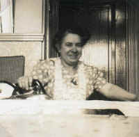
|

|

|
|
|
MARIE-ANNA
THE GRANDMOTHER
Marie-Anna becomes a grandmother
in 1946. She has 21 grandchildren, maybe more,
since we do not know whether Benoît's daughters had
children.
Benoît
has 3 daughters: Diane, Paule, Carole.
|

Gérard has 9 children:
Nicole, André, Christiane, Francine, Lucie, Céline,
Martin, Denis, François. |
Rosaire
has 6 children: Richard, Daniel, Raynald, Christine, Jocelyn,
Ghyslyne.
|
 Jean-Noël
has three children: Michel, Linda, Jean. Jean-Noël
has three children: Michel, Linda, Jean.
Michel dies in an accident in Vancouver in 1970.
Jean-Noël and Florence adopt a disabled child
who had been placed with them as a foster child, Normand Bériault.
This child dies in 1978.
|
|

Christmas 1947 Marie-Anna,
Richard (Rosaire's son), Ghislaine
|

Christmas 1948
In front, from
left to right: Benoît, his daughter Diane, Richard,
Rosaire's eldest son.
Around the table, from left to right: Cécile, Gérard
Cantin, Ghislaine, Marie-Anna, Gérard holding Nicole,
Jacqueline, Rachel, Rosaire, Florence.
|
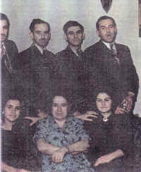
Family, Christmas
1948
|
|

Christmas 1950
Diane, Marie-Anna,
Nicole, Richard (?)
|

7965
St-Gérard, photo taken by Ghislaine in 2003
|

Rosaire on April
21, 1944, posing in front of the "Liberator E.W.
..." before leaving for India.
|
|

Michel, Linda and Marie-Anna in 1953
|

Marie-Anna and
Nicole visiting her daughter Ghislaine at
boarding school

Marie-Anna, Francine, Ghislaine, Christiane,
Jacqueline
André, Lucie, Nicole
|
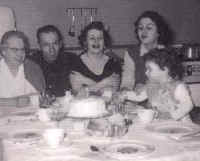
Marie-Anna, Gérard
Cantin, Florence, Thérèse and Linda
|
| MARIE-ANNA'S
GREAT-GRANDCHILDREN |
|
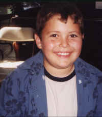
Martin, Jean-Noël's grandson
|

Gérard's grandchildren
|

Rosaire's grandchildren, and
Ghislaine
|
 From
the 1952 Lovell* directory we know that Gérard and his family
move to 7078 Des Écores and that his mother, Marie-Anna,
moves close by, to 7092 rue Des Écores in the parish of
St-Barthélemy. Who followed whom? From
the 1952 Lovell* directory we know that Gérard and his family
move to 7078 Des Écores and that his mother, Marie-Anna,
moves close by, to 7092 rue Des Écores in the parish of
St-Barthélemy. Who followed whom?
It is the second floor of a house adjoining, to the south, a block
of six flats that Marie-Anna buys the following
year. She then moves into
the north ground-floor flat, no. 7082. In 1954
Jean-Noël moves in next door, at no. 7080. The rents are her main
income.
On May 24, 1957, her
eldest son, Benoît, dies of widespread cancer. The
family does not keep in touch with Benoît's widow and three daughters.
From the 1957 Lovell* directory on, we find no more
trace of Marie-Anna on rue Des Écores, or anywhere else. We
know she owned the building until her death, but
she no longer lives there. Nor does Gérard; he lives in St-Luc but
goes on working for the City of Montréal. Only Jean-Noël
lives there, until 1960 inclusive, after which he moves
to Pont-Viau.
Note that Gérard's name still appears in some
directories; I think that is because he had to give
a Montréal address to be allowed to work for the
City. He also had to be a Montréal resident to
register his children at the Montréal library.
Marie-Anna first lives for a few
years on
boulevard Gouin, in a home for the elderly run
by the Sisters of Bon Conseil. Then, on Gérard's initiative,
she stays for a very short time with him in St-Luc. She is
then taken into a
hospice in Marieville as her health is failing. Ghislaine, her youngest daughter, a nun, lives and works
nearby. Gérard visits his mother almost every day, making the
detour on his way to work in Montréal, even
though he "worked with figures". His
decision to move his mother was questioned by the
other members of the family, but we must give him credit for his
faithfulness in visiting her, year after year.
|
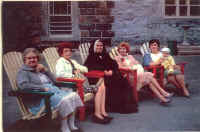
A Sunday
in the autumn of 1962, visiting day in Marieville.
In the
foreground, Marie-Anna, Mrs. Philippe (Rachel's mother and also
Marie-Anna's longtime friend), Ghislaine, Rachel,
Jacqueline and baby Denis.
Note that a few years later Mrs. Philippe lives
at 7078 Des Écores, the flat formerly
occupied by Gérard's family. She stays there until
she is 100. Born in 1897 like Marie-Anna, she dies in 2002 at the age of 104.
|

The children of
Rosaire and of Gérard, visiting their grandmother in
Marieville, photographed here with their aunt Ghislaine
|
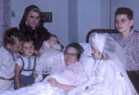 Marie-Anna dies in Marieville
on July 8, 1966, at the age of 69, of intestinal cancer.
Her death also sets off an "inheritance
quarrel" for several reasons, including a disagreement over
whether or not to sell
the property on rue Des Écores. After Jacqueline's death in
1986, the three brothers get back in touch. The two sisters
had always gone on seeing the whole family. Thérèse
dies in 1994, Gérard in 1996.
|

Thérèse in 1994
|

Ghislaine, Jean-Noël, Rosaire, Gérard in 1987
|

Ghislaine
|
* The
Lovell directories cover July 1 of one year to June 30 of
the next. The information was gathered door to door in May. In
some directories, owners are marked with an asterisk.
The occupation is often listed, as is the employer. You can
search by the person's name or by address. They are
available on the website of the Archives
nationales.

End of the section on
Marie-Anna Caron.
|
|
|